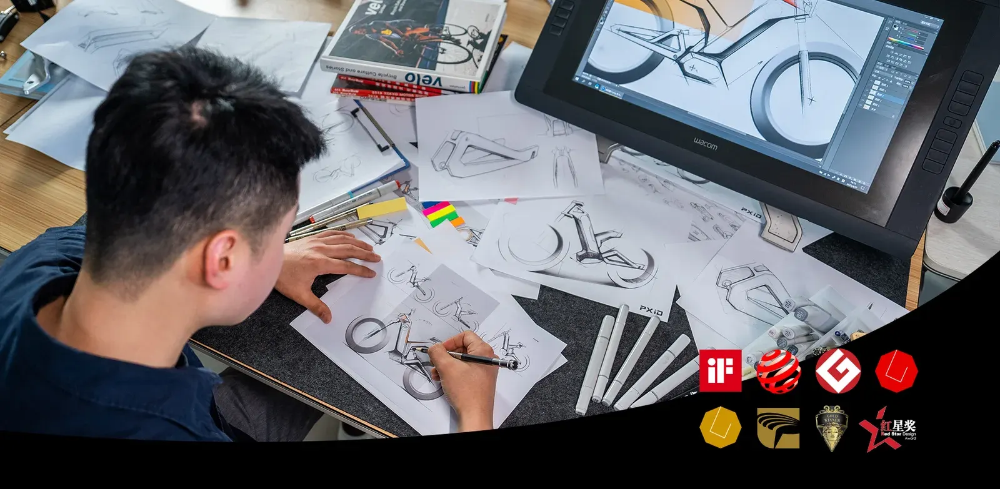
01 / PRODUCT DESIGN
产品设计
以目标市场、使用场景和法规要求为起点，完成需求分析、草图、三维建模与方案评审。
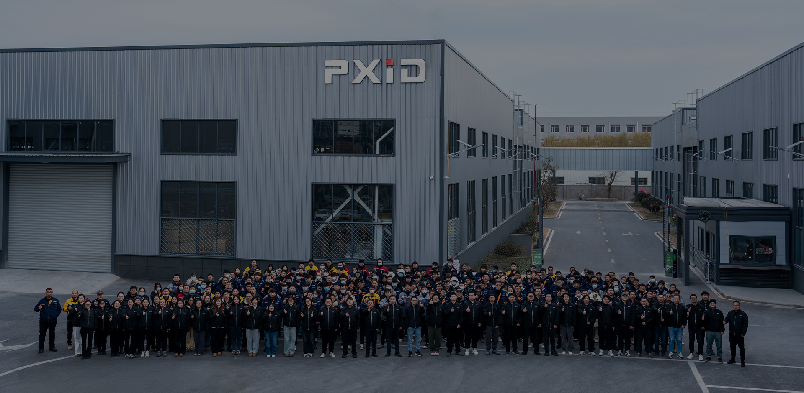
01WHO WE ARE
PXID 从工业设计起步，逐步建立结构与电控开发、工程样车、制造与质量检验能力。我们面向个人出行、城市通勤与共享出行，将产品定义与制造交付纳入同一项目。
产品按目标市场法规体系开发，设计、工程与制造围绕同一交付目标展开。
02DESIGN & ENGINEERING
从市场与场景出发，通过结构、电控与样车验证，把产品想法变成可制造、可验证的方案。

以目标市场、使用场景和法规要求为起点，完成需求分析、草图、三维建模与方案评审。
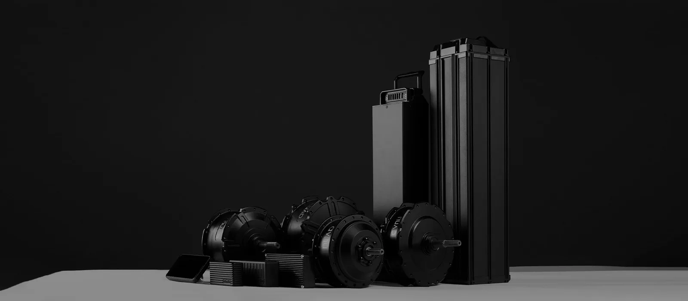
围绕结构、材料、驱动控制、电池管理与人机交互，统筹整车工程方案。
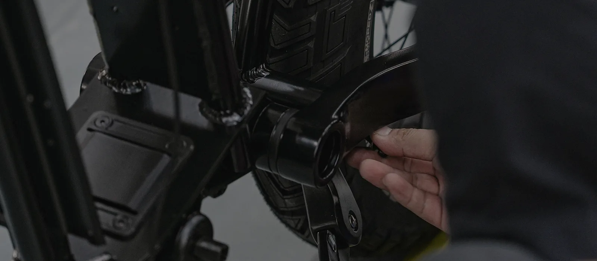
制作接近量产状态的样车，验证结构、装配与制造工艺，提前发现和解决问题。
03IN-HOUSE MANUFACTURING
从模具、零件到车架与整车装配，自有设备和产线承接工程方案，工艺与检验要求延续到生产现场。
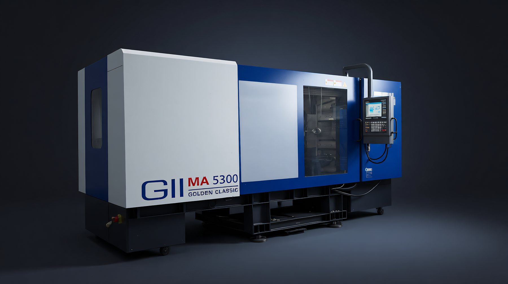
01 90–530T · 7 台注塑机
塑料结构件、外观件与功能件
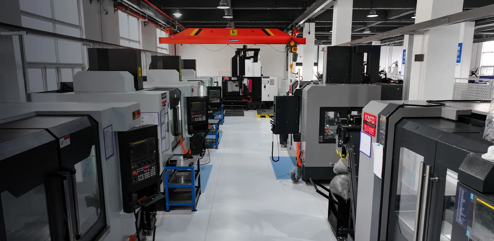
02 9 台设备 · 原型与小批量
样件、工装与金属零件加工
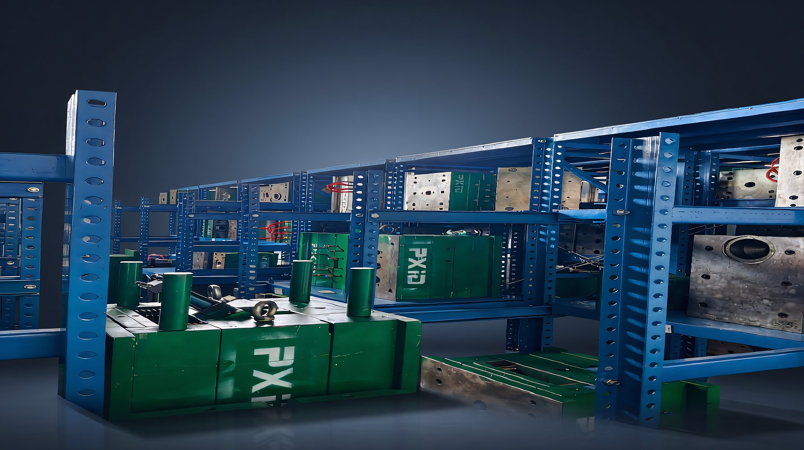
03 放电 3 台 · 线切割 3 台
从 DFM 评审到试模修模
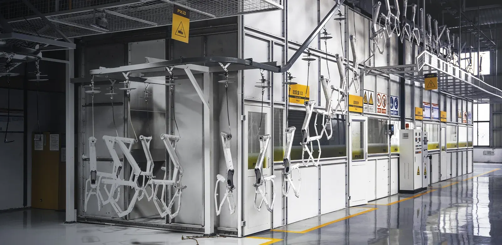
04 自有产线 · 热处理与涂装
结构成型、校正与表面处理
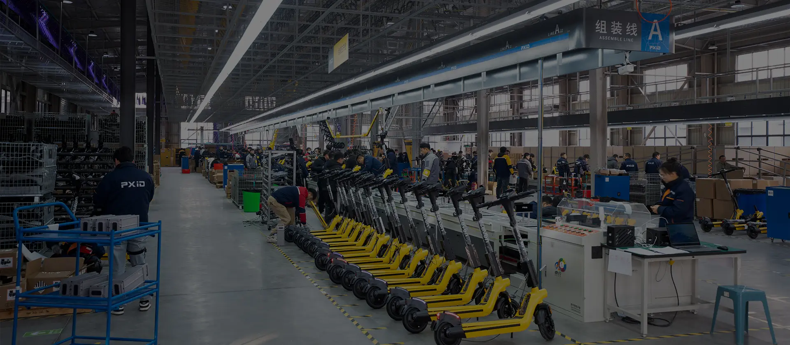
05 3 条装配线 · 批次交付
整车、部件与电气功能调试
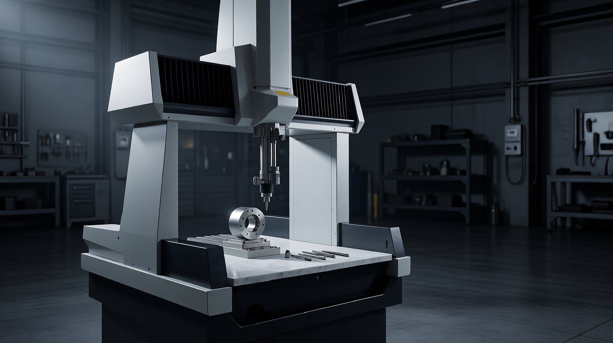
06 三坐标检测 · 20+ 项测试
尺寸、耐久与整车验证
PROJECT QUESTIONS
工程样件可从 1 件开始。小批量试产与批量生产按工艺、材料和项目要求分别评估。
可以。产品设计、工程样件、模具开发与批量制造在同一项目中衔接，样件阶段确认的工艺和检验要求延续到量产。
依据图纸、材料、结构和加工工艺确认关键尺寸及检验方案。设备定位精度与成品验收公差分别确认，零件按约定图纸及检验要求交付。
支持车架与金属零件的表面处理、颜色试样及涂装；T4 / T6 热处理按材料和产品要求安排。
通过 IQC 来料检验、IPQC 过程控制、OQC 出货检验与 TRACE 批次追溯，记录关键工序和检测结果。
收到图纸、目标配置或样车后，结合工程复杂度、材料准备和生产排期评估。样件与批量订单分别确认报价和交期。
有产品想法，可先提供目标市场、使用场景与参考车型；已有设计或样车，可提供图纸、样车和目标配置，由团队开展工程评估与报价。
04QUALITY & DIGITAL FACTORY
从材料入库到产品出货，检验与批次记录贯穿每个环节；研发、生产、仓储和供应通过同一套数据协同。
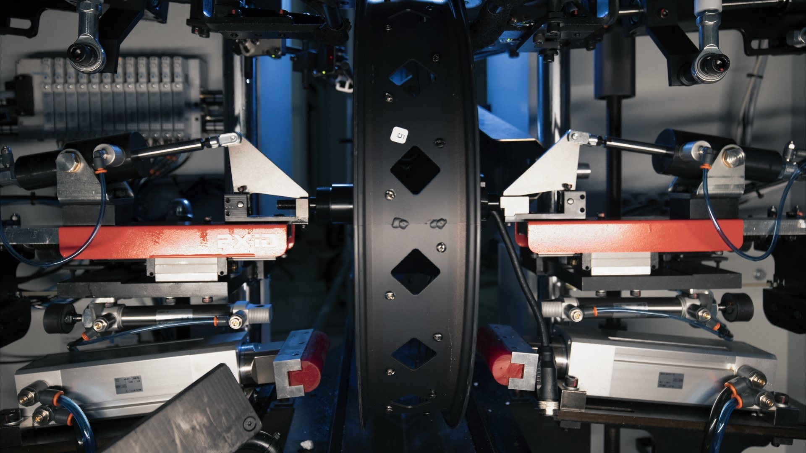
尺寸检测、盐雾试验与包含路试在内的 20+ 项首批样车测试，围绕产品与项目要求展开。
入库前检查材料组成、性能与规格，确认来料满足项目要求。
核查关键工序，记录过程结果，及时纠正生产偏差。
检查外观、尺寸、功能与包装，完成合格品放行。
保留批次记录、材料证明与测试数据，支持质量问题追溯。
CONNECTED FACTORY
贯通研发、工艺设计、BOM、版本变更与生产执行，让工程信息衔接现场。
全流程条码管理，关联库存、出入库与物料配送。
连接采购、交付、质检与售后信息，完善供应和质量追溯。
05QUALIFICATIONS & AWARDS
企业认定、质量管理体系与设计奖项，共同记录 PXID 在设计开发和制造能力上的积累。
企业资质与认定
ISO9001（2023） 质量管理体系
按目标市场要求开展 CE / UL / EEC 相关产品认证。
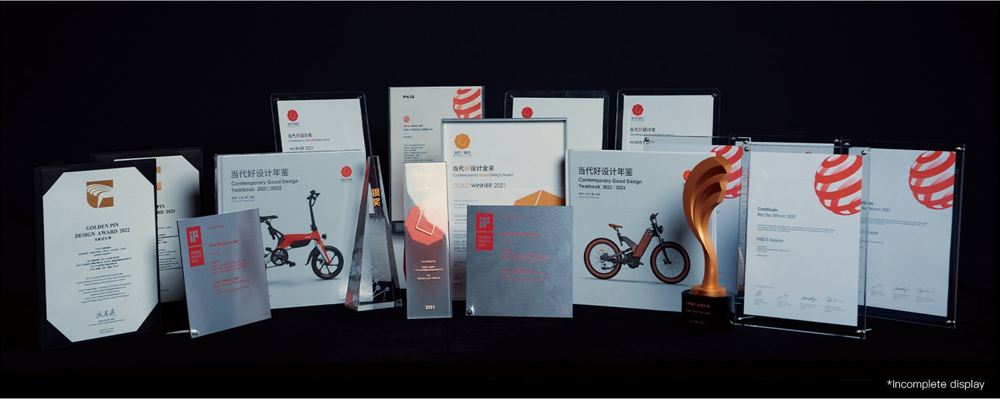
点击证书，查看原图
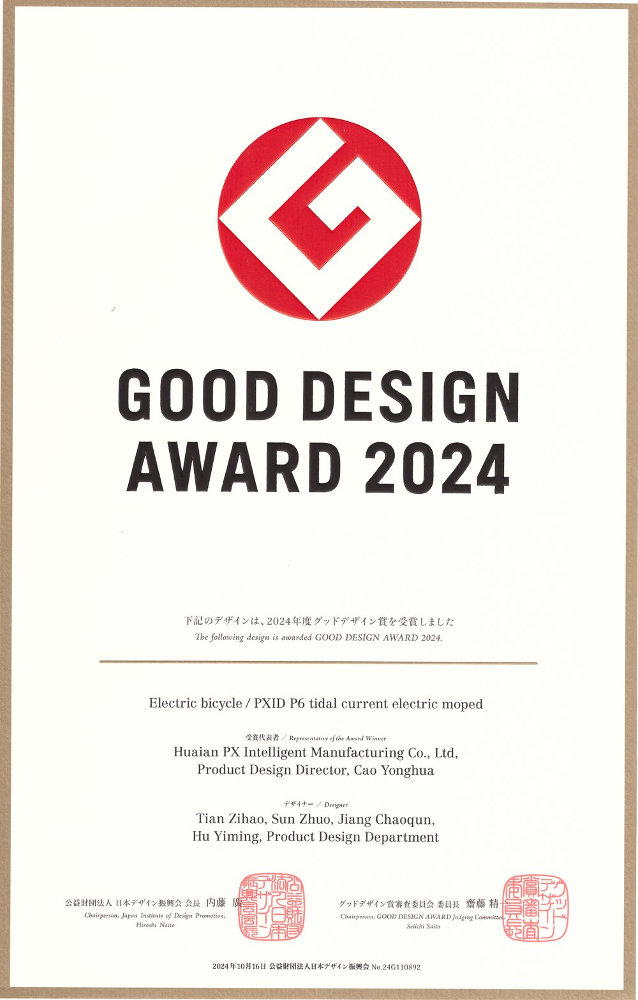
日本优良设计奖 · P6 电动摩托车
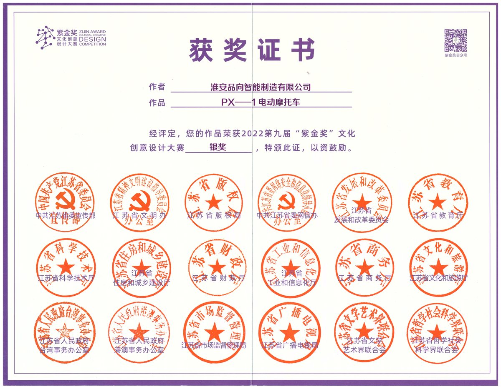
文化创意设计大赛 · PX-1 电动摩托车
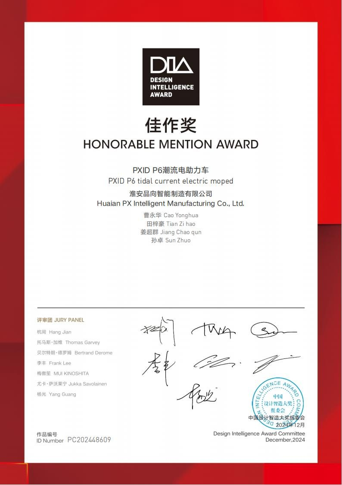
中国设计智造大奖 · P5 电动摩托车
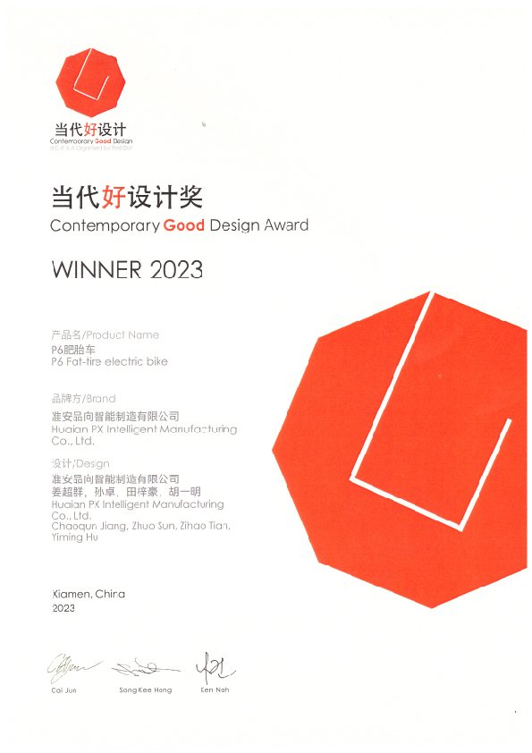
P2 胖胎电动自行车
06OUR JOURNEY
设计、客户交付与智能制造三段能力持续衔接，形成今天的 PXID。
品向工业设计成立，开展产品设计与开发。
品向科技成立，承接贸易与客户交付。
品向智能制造成立；获国家高新技术企业、省工业设计中心认定。
25,000㎡ 智能制造基地投用，贯通核心制造工序。
以研发、生产、仓储与供应协同，完善交付与追溯。
07START WITH PXID
无论还在定义产品，还是已经有设计与样车，都可以由同一团队衔接后续的工程开发与制造。
先确认目标市场和使用场景，建立产品定义，再进入造型设计与可行性评估。
从结构与制造可行性切入，衔接工程样车、模具与车架开发，以及量产准备。
LET’S BUILD THE NEXT